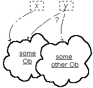
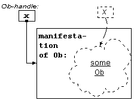

Version
0.01 Last updated
2002-06-21-10:30 -0700 (pdt)
The latest version of this document is always at
http://Miser-theory.info/sketch/osketch.htm. For a history of
this document and its revisions, see Miser Note
n020600: oMiser Sketch.
Here is a brief sketch of the foundation for any
(and every) Miser system. This is the oMiser level because it
covers the elementary, ‹Ob› structure only. It is devoted
exclusively to Obs and Obs, seemingly alone in a world unto themselves.
This simple, closed structure is at the foundation of all extensions that are
introduced to achieve "higher" levels. oMiser and
‹Ob›
provide a rich yet somehow arcane and rarefied place. It is a powerful
launchpad for distinguishing how much we rely on the familiar and how much is
overlooked in our everyday approach to computation, theories, logic, mathematics
and especially to language itself.
Content
We want to put something up top about what we are doing here, and the
viewpoint that we want to encourage.
Two ways we want to look at Obs and the basic provisions of the
Miser system.
We have a computer implementation in mind. But it is
abstracted. Still a computer implementation, but not a fixed
implementation. So I will illustrate the computational nature of Miser by
informal means: diagrams, descriptions of behavior of a computer, and so on.
At the same time, there is also a theoretical system, a
mathematical structure, that the computational system honors in a particular
way.
I will give informal characterizations of the computational
system, using diagrams that are to be suggestive of valid interpretations of the
theory.
I will also give informal expression to the theoretical system
of which the computational system is to be a valid interpretation.
This illustrates how these two views can be brought together in
demonstration of what it means to manifest abstractions (theoretical entities)
by computational means. This sets the stage for a rigorously developed
manifestation in operational computer software and for a formally developed
exploration of the theoretical system that is its foundation.
It is important to notice that the theory is being developed with an
implementation in mind. I am interested in the operational capabilities of
the kind of system that I envision, while at the same time the development of a
theoretical system sharpens understanding and also provides a venue for
exploring the way that theory and reality can be said to collide in the
computer. The egg and the chicken have no existence apart.
We mean by this that Obs are
sufficient. In principle, we don't need anything more to provide a
universal system of computation. It is neither practical nor desirable to
limit ourselves this way. We start here because this is the place where we
can reveal exactly what is involved in manifesting anything via computation and
then what is or is not remarkable by extensions that deliver computation on
familiar terms that, nevertheless, preserve Obs and their power.
|
Here it is argued that comparison, knowledge of existence,
and understanding of number, are essential to knowledge, but cannot be included
in perception since they are not affected through any sense organ.
|
-- Bertrand Russell on Knowledge and Perception in Plato.
1.1 Identity and Existence
This section provides a basic flavor of the approach and how we
will toggle between several perspectives, always endeavoring to keep them
distinct.
1.1.1 Theoretical Structure
The structure, ‹Ob› = ‹Ob, Of, Ot›
consists of
-
a set, Ob, of elements (the individual Obs),
-
a set, Of, of functions over Ob
-
and a formal system, Ot, with initial axioms
that provides everything and only what there is to be (formally)
known about ‹Ob›.
1.1.2 Informal Conception
There are Obs. That's all we get to know for now. Don't
assume anything. And don't confuse the notion of Obs with anything that
you might already know about objects or "objects" or object-oriented programming
or anything else. We'll look for prospective connections later. For
now, consider that with oMiser Obs have no relationship to classes and objects
the way they are spoken of by software developers.
 For
now, there is very little to know about Obs. They are some kind of
(abstract) thing. We will indicate how little we know by depicting an
arbitrary Ob as a cloud-like entity.
For
now, there is very little to know about Obs. They are some kind of
(abstract) thing. We will indicate how little we know by depicting an
arbitrary Ob as a cloud-like entity.
It is fundamental that there can be many Obs -- an unlimited
number, actually -- and however they come to our attention, they are distinguished in some way. When the same Ob
comes to our attention in more than one way, it is always recognizable as
the same Ob. That's an essential quality for all interpretations that we
want to allow.
our attention, they are distinguished in some way. When the same Ob
comes to our attention in more than one way, it is always recognizable as
the same Ob. That's an essential quality for all interpretations that we
want to allow.
This is represented in the theory by the rules for identity
and distinction. It is not a complete representation and we will
eventually examine this part more closely.
1.1.3 The Axioms of Identity for Obs
There is an equivalence relationship defined over Obs.
There are no other entities in ‹Ob›, so it is safe to use the common
symbol "=" for Ob identity.

1.1.3.1 [Reflexivity] If x is an Ob, x =
x.
1.1.3.2 [Symmetry] If x and y are Obs, if
x = y, then y = x.
1.1.3.3 [Transitivity] If x, y and z
are Obs, if x = y and y = z, then x = z
1.1.3.4 [Distinction] x ¬= y is
equivalent to ¬(x = y) by definition.
1.1.3.5 [Identity Completeness] It is the case that (x
= y) or (x ¬= y) for x and y any Obs and
that ¬(x = y and x ¬= y) as well.
The identity completeness condition is introduced to establish
that whether or not the law of excluded middle holds for propositions in
general, it does apply for identity, and identity applies among all Obs.
This places a strong condition on any valid interpretation of ‹Ob›,
and is part of the assurance of a sound computational manifestation for Obs.
[Find a better term if sound is inappropriate or misleading here.]
1.1.4 Computational Manifestation of Obs

The idea
of pointing and the idea of an oracle for identity. The idea that
there is one Ob
The idea that manifestations show up in a conventional
computer system as something at the level of the conventional computational
system.
We will use a memory location as a placeholder, in the
computational model, for the manifestation. It is an entity of the
computational system and it holds an Ob-handle of some kind.
When we introduce identity, we will consider that there is
some oracle that can be used to ascertain, on behalf of the computational
application, whether two Ob-handle values are for the same Ob or not.
1.1.5 Existence
Talk in the computational and informal conceptions first.
There is nothing to say about this in the theory, at this point.
It is the interpretation/manifestation that gives existence to the extent there
is such a thing.
We will strengthen this requirement when we assert that the
definite, determined object ob-NULL
is in Ob.
Later, we get to look at how manifestation of
ob-NULL
(or any other, but this one is assured) gives rise to all of ‹Ob›, that
Obs live only in ‹Ob› and are not reduced or separatable. This is
the case for ‹Ob›-manifestation.
1.2 Basics - Informal Theory
If z = c(x, y), then x ¶ z and y ¶ z.
If z = s(x), then x ¶ z.
If x ¶ y and y ¶ z, then x ¶ z
If x ¶ y, then ¬(y ¶ x)
If x = y, then ¬(x ¶ y)
a(z) = z or a(z) ¶ z
b(z) = z or b(z) ¶ z
c(x, y) = c(m, n) if-and-only-if x = m and y = n
s(x) = s(m) if-and-only-if x = m
1.1.1.1 Identity. For all Obs x and y,
either x = y or ¬(x = y) but not both. The
usual identity propositions hold. We write x ¬= y for ¬(x
= y)
1.1.1.2 The set of Obs is closed with respect to the
primitive Ob functions a, b, c, and s. The primitive functions are
well-defined and total.
1.1.1.3 If z = s(x), then a(z) =
x
and b(z) = z.
1.1.1.4 If z = c(x, y), then a(z)
= x and b(z) = y and z is a combination.
1.1.1.5 z = c(a(z), b(z)) if and
only if z is a combination.
1.1.1.5 For any Ob z, If a(z) = z
and b(z) = z, then z is an individual.
1.1.1.6 For any Ob z, If a(z) = z and b(z)
= z, then z is a singleton and z = s(a(z)).
1.1.1.7 The individuals, singletons, and combinations
partition the Obs. Every Ob is exactly one of these.
1.3 Combinations
1.1.2.1 z = c(a(z), b(z)) if and only if z is a
combination.
1.4 Singletons
If z = s(x), then a(z) = x and b(z)
= z
1.5 Individuals
We have described all of the primitive functions of ‹Ob› but one.
It is asserted that these functions, with =, provide a complete theory for
Obs, given some way to characterize all the effective procedures that there
are on Obs.
oApply: Ob x Ob -> Ob is in Of.
If individual(f) then oApply(f, x) = oAppInt(f, x)
If p = s(c) then oApply(p, x) = c
The limitations of operating with Ob manifestations because there is no
externally/humanly-meaningful function. We can represent everything,
but communicate almost nothing. We don't even have the formalism of
‹Ob›
theory available. We just have raw access to the manifestation of
‹Ob›, not the formalism (or metalanguage) in which we have been
expressing Obs.
The idea of persistent description of Obs. That will be later. We
can "write" Obs in XML and we can "write" Obs in the scripting language, Frugal.
More than that, there is the use of the Applicative Interpretation model,
and its extensions, to connect to the world in extremely useful, some might
say meaningful, ways.
Building-out and bridging will happen in this progression.
First, we will develop [o]Frugal, a scripting language that allows us to
express oMiser computations in something that is shareable among people and
that provides an external language that we can use to quickly manifest an
‹Ob›
and exercise it in breadboard/prototype mode.
We will also develop obXML, a format in XML for expressing an [o]Miser Ob
such that it can be exchanged and then (re-) manifest on the same or
different computers at later times. The idea of manifestation
elsewhere and re-manifestation will provide interesting considerations.
With oMiser, there is no identified way, internal to ‹Ob›,
to deal with symbols. So there is no way to deliver symbols to oMiser
and create computations that work with those symbols and incorporate symbols
in the result. This impairs our ability, using ‹Ob› itself, to
provide formal manipulations (still on Obs) and that allow us to have Obs be
convenient expressions for forms that are tied to the intended purpose of
having our computations be interpretations of other important theories:
arithmetic, logic, and applications that arise in the purposive use of
computation. The inputs and results are still Obs, but we have a form of
individuals that makes Obs useful as symbolic expressions that are
tied to the purpose of an oMiser computation. This takes us to the sMiser
level. This is done by establishing a family of individual obs
that provide an external-world identity, expressed as a spelled symbol.
sMiser is accompanied by [s]Frugal, a scripting language that allows us to
take advantage of symbols (for people) in commanding Miser computations and
operating in the enriched sMiser world. (An [o]Frugal version exists
merely as a prototype fixture for exercising oMiser and obtaining obXML as a
way to save and restore our early work.)
sMiser is a baby step toward the development of iMiser, an
interactive/imperative system. It deals with important considerations
of language, identity, and the use of symbols that are not normally
separated out. We have a world without symbols, then we extend oMiser
with symbols that allow an interesting external sense of identity. We
have not actually done anything, but the result is far more convenient.
We now discuss the fact that every individual has an applicative
interpretation. Now, in oMiser, the application of any Ob to an Ob,
produces an Ob. This would appear to not be very fruitful.
Consider that an individual Ob can be the ‹Ob› manifestation of an
object in some other system than ‹Ob›. We cannot see, directly
in the ‹Ob› manifestations, what these other manifestations are.
But whatever they accomplish, if we have a complete primitive set of
operations on them, also provided via Ob manifestations, we know that we can
create every computable function on those objects using the
already-established computational completeness of oMiser for computations on
Obs.
This is a giant leap, and better motivational examples will be needed.
It also helps to have Frugal-ese and sMiser to appeal to.
Which new kinds of theories do we manifest this way. Well, for
starters, the ones that let us express sFrugal and obXML processing in
‹Ob›
itself.
-
- [More1979]
- More, Trenchard. Various technical reports and conference papers.
Find his use of individuals and singletons and
construct a reference for it. It should be in the APL 79 proceedings
and in IBM research papers before that. Iverson may have incorporated
that into something by now, too. [I still have a file folder on Array
Theory. Look there.]
- [Proskurowski1980]
- Proskurowski, Andrzej. On the Generation of Binary Trees.
J. ACM 27, 1 (January 1980), 1-2. [Tear sheet in file on
sorting]
- [Rosenbloom1950]
- Rosenbloom, Paul C. The Elements of Mathematical Logic.
Dover (New York: 1950).
My expression of combinatory algebra is based on
that given in Rosenbloom's Chapter 3 section on combinatory logics.
- [Russell-PlatoQuote]
- Russell, Bertrand. On Knowledge and Perception in Plato. Now
where the heck did he say that.
- [Solomon1980]
- Solomon, Marvin., Finkel, Raphael A. A Note on Enumerating Binary
Trees. J. ACM 27, 1 (January 1980), 3-5. [Tear
sheet in file on sorting]
- [Strachey-McG]
- Strachey, Christopher. The McG Paper on macro generation, British
Computer Journal. Find that puppy again.
-
- 0.01 2002-06-16 (orcmid).
- Build the basic sketch so that people who are familiar with this kind of
system can get a sense of it until I stitch more in here and build out the
notes that have already been identified/started as well as ones that are
needed to support the sketch. [dh:2013-12-10-17:30 The links among files and
images are all adjusted to employ case-sensitive consistency on the web
site. There is no change to the content, only to its proper location
and presentation on the Web.]
created 2002-06-16-18:31 -0700 (pdt) by
orcmid
$$Author: Orcmid $
$$Date: 13-12-10 17:32 $
$$Revision: 23 $